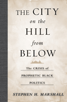

<body bgcolor="#FFFFFF" text="#000000" link="#0000FF" vlink="#CC0000" alink="#CC0000"><center><hr width="350" size="1" align="center" noshade>A compelling conversation between African American political intellectuals and the canon of western political philosophy<hr width="350" size="1" align="center" noshade><p><a href="https://cdcshoppingcart.uchicago.edu/Cart/ChicagoBook.aspx?ISBN=9781439906552&&PRESS=temple" target="_top">Buy this book!</a> | <a href="https://cdcshoppingcart.uchicago.edu/Cart/Cart.aspx?PRESS=temple" target="_top">View Cart</a> | <a href="https://cdcshoppingcart.uchicago.edu/Cart/Cart.aspx?PRESS=temple" target="_top">Check Out</a></p><p></p></center><!--none//--><h1>The City on the Hill from Below</h1>
<H2>The Crisis of Prophetic Black Politics</H2>
<h3>Stephen H. Marshall</h3>
<P>cloth 1-4399-0655-6 $70.50, Jun 11, <FONT COLOR=#990033>Available</FONT>
<br>paper 1-4399-0656-4 $29.95, <FONT COLOR=#990033>Available</FONT>
<br>Electronic Book 1-4399-0657-2 $29.95 <FONT COLOR=#990033>Available</FONT>
<BR> 250 pp
6x9
</P><h3 align="center"><P><font color="#996633">American Political Science Association's Foundations of Political Theory First Book Award,
2012</font></P>
</H3>
<BLOCKQUOTE><I>"</I>The City on the Hill from Below<I> is an interesting, provocative, and important project, and Marshall has engaged deeply and profitably with his primary texts. He makes arguments that bear directly on important current debates. The most original aspects of Marshall’s book are its contribution to Africana political thought and its insistence on linking Africana thought to American thought. There is a laudably Ellisonian insight at the heart of this work: the idea that black thinkers were part of a quintessentially American tradition and that we can’t really understand them or America until we understand this connection."</I><BR> &#151<B>Paul C. Taylor</B>, Associate Professor of Philosophy, Penn State University</I></BLOCKQUOTE>
<p>Within the disciplines of American political science and political theory, African American prophetic political critique as a form of political theorizing has been largely neglected. In <em>The City on the Hill from Below</em>, Stephen H. Marshall interrogates the political thought of David Walker, Frederick Douglass, W.E.B. Du Bois, James Baldwin, and Toni Morrison to reveal a vital tradition of American political theorizing and engagement with an American political imaginary forged by the City on the Hill. </p>
<p>Originally articulated to describe colonial settlement, state formation, and national consolidation, the image of the City on the Hill has been transformed into one richly suited to assessing and transforming American political evil. <em>The City on the Hill from Below</em> examines how African American political thinkers appropriated and revised languages of biblical prophecy and American republicanism to recast the classic American political self-image of the nation as the City on the Hill.</p>
<BR>&nbsp;<h2>Excerpt</h2><P>Excerpt available at <a href="http://www.temple.edu/tempress">www.temple.edu/tempress</a></p>
<BR>&nbsp;<h2>Reviews</h2>
<p><I>"</I>The City on the Hill from Below<I> is an engaging exploration of a great theme. Marshall provides a very able analysis of the major African American political writers he examines: David Walker, Frederick Douglass, W.E.B. Du Bois, James Baldwin, and Toni Morrison. He unites them by interpreting them through a promising lens: black political thinkers responding to one of the central tropes of American political and religious culture, the nation as a ‘city on a hill.’ Greatly to his credit, Marshall highlights, throughout, limitations in the political vision of each thinker, even if he sees them as representing a tradition that we would do well to recover if we could." </I><br>&#151<b>Rogers M. Smith</b>, Christopher H. Browne Distinguished Professor of Political Science, University of Pennsylvania
<p><i> "Marshall presents a challenging interrogation of a central trope of American political theory in this excellent new work. In examining the meaning and implication of 'the city on the hill' as political imaginary, the author skillfully guides readers through the history of prophetic political critique from African American intellectuals and offers insights into both the strengths and weakness of the arguments put forth by David Walker, Frederick Douglass, W. E. B. Du Bois, and James Baldwin.... This is a well-written, incisive intellectual work that offers critical insights into political theory and African American politics. Highly recommended."</i> <br>&#151<b><i>Choice</i></b>
<p><i> "Even compared to recent—and excellent—publications on black political thought, Stephen H. Marshall's </i>The City on the Hill From Below<i> stands out. Marshall's first book is notable for its range and sagacity. He examines how David Walker, Frederick Douglass, W.E.B. Du Bois, and James Baldwin invoke and reinterpret the best-known metaphor for American exceptionalism: the 'City on the Hill.'... Marshall's keenest insight is to treat each thinker as a theorist of 'political evil'.... [R]ichly textured...Marshall's reading [of Walker] is nothing short of commanding.... </i>The City on the Hill from Below<i> is a remarkable first book that contributes novel insights for the study of black political thought.... By addressing so many important thinkers and themes, the book represents a significant contribution to the study of black political thought and political theory more generally."</i> <br>&#151<b><i>Perspectives on Politics</i></b>
<p><i>"Marshall’s book makes for a fine treatment of black political thought."</i> <br>&#151<b><i>Journal of American History</i></b>
<BR>&nbsp;<h2>Contents</h2><P>
<p>1. Introduction: The City on the Hill from Below
<br>The Crisis of Prophetic Black Politics
<br>The City on the Hill as Political Education
<br>The City on the Hill: A Model of Political Desire
<br>New World Modernity and the Parameters of the Political Imaginary
<br>Prophetic Political Critique and the Problem of Political Evil</p>
<p>2. Black Liberty in the City of Enmity: The Political Theory of David Walker
<br>An Appeal to the Colored Citizens of the World
<br>Awakening Spirits and Wrestling with Paradox: the Political Work of Walker’s Preamble
<br>Constituting the Slave as a New Political Subject
<br>Christianity Corrupted
<br>The Moral defects of Repatriation
<br>Ignorance and Enmity
<br>Free Black Political Subjectivity and the Political Virtue of Glory</p>
<p>3. “Glorious Revolution” in the City of Mastery: Frederick Douglass on the Corruption of the American Republi
<br>Situating Douglass: History, Genre, Theory
<br>Slavery and the Evils of Mastery
<br>A Political Anatomy of Dehumanization
<br>Mastery’s Corrosive Effects on Masters
<br>American Mastery as Political Evil
<br>Conclusion</p>
<p>4. Aristocratic Strivings in the Gilded City: The Political Theory of The Souls of Black Folk
<br>Athens, Rome, and Atlanta: Rhetoric and Theory in “Wings”
<br>Republican Politics and the Problem of Booker T. Washington
<br>Du Bois and the Talented Tenth
<br>The Political Office of the University
<br>The Aristocratic Strivings of the “Genuine Scholar”
<br>Du Bois, Demagogues, and American Aristocratic Sensibilities
<br>Du Bois’s Jeremiad</p>
<p>5. (Making) Love in the Dishonorable City: The Civic Poetry of James Baldwin
<br>The Old Faith
<br>Making Blackness
<br>Calling all Lovers
<br>Love, Liberation, and the Covenant with Life
<br>Achieving our Country: Violence, Power, and “Unshakable Authority”
<br>The End of a Tradition?</p>
<p>6. Conclusion: Prophetic Critique in the Age of the Joshua Generation
<br>The Political Inheritance of Prophetic Critique
<br>Faith and Desire: The Dignity of Prophetic Critique
<br>Prophetic Faith, Political Desire, and the Problem of American Expectations
<br>Darkness at the Heart of Sacrifice: The Courage of Black Women
<br>The Joshua Generation and the Professionalization of Black Politics In the Obama Era</p>
</P><BR>&nbsp;<H2>About the Author(s)</H2>
<P><strong>Stephen H. Marshall</strong> is Associate Professor in the Department of American Studies and the Department of African and African Diaspora Studies at the University of Texas-Austin.</P>
<BR><H2>Subject Categories</H2>
<p><A HREF="/tempress/political.html" TARGET="_top">Political Science and Public Policy</a>
<BR><A HREF="/tempress/african.html" TARGET="_top">African American Studies</a>
<BR><A HREF="/tempress/history.html" TARGET="_top">History</a>
</p>
<p align="center"><a href="https://cdcshoppingcart.uchicago.edu/Cart/ChicagoBook.aspx?ISBN=9781439906552&&PRESS=temple" target="_top">Buy this book!</a> | <a href="https://cdcshoppingcart.uchicago.edu/Cart/Cart.aspx?PRESS=temple" target="_top">View Cart</a> | <a href="https://cdcshoppingcart.uchicago.edu/Cart/Cart.aspx?PRESS=temple" target="_top">Check Out</a></p><p><font face="Arial" size="1"><a href="copyright.html" onMouseOver="window.status='Web Copyright Policy';return true;" onMouseOut="window.status=''" title="Web Copyright Policy">&copy;</a> 2015 <a href="http://www.temple.edu" target="new" onMouseOver="window.status='Link to Temple University home page';return true;" onMouseOut="window.status=''" title="Link to Temple University home page">Temple University</a>. All Rights Reserved. http://www.temple.edu/tempress/titles/2145_reg.html</font></p>